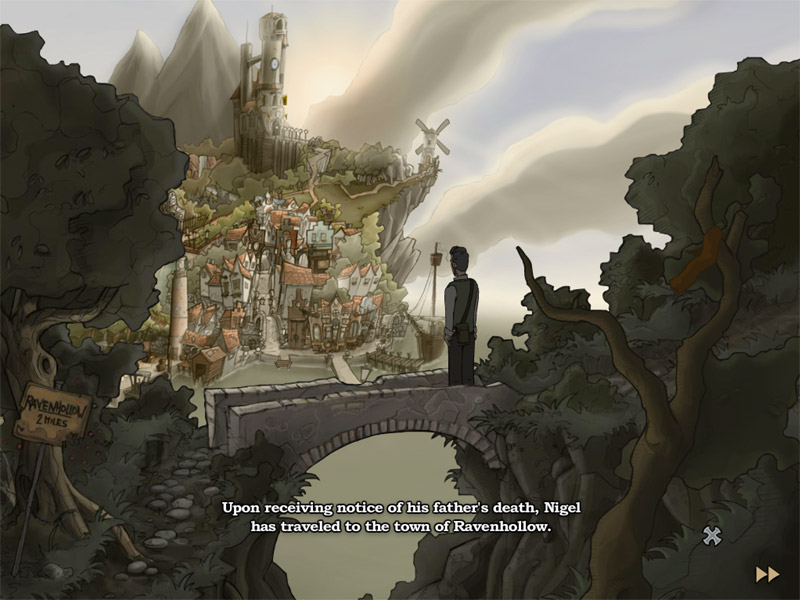

cutscene_intro

intro
Look at (main)
cutscene_intro_000
nora: Who are you?
cutscene_intro_001
nora: What do you want?
cutscene_intro_002
vincent: Don't worry, I just want to know ...
cutscene_intro_003
vincent: What makes you tick?
cutscene_intro_004
narrator: The next day, another young man's
adventure will begin.
cutscene_intro_005
narrator: Here he comes.
cutscene_intro_006
narrator: His name is Nigel Trelawney.
cutscene_intro_007
narrator: Upon receiving notice of his father's death, Nigel has traveled to the town of Ravenhollow.
cutscene_intro_008
narrator: He has come to settle his father's estate.
cutscene_intro_009
narrator: However, the shadow of a nearby Castle has fallen over this small town and its inhabitants.
cutscene_intro_010
narrator: Little does Nigel expect that his quest may bring hope to Ravenhollow, and shape the fate of a kidnapped girl ...
cutscene_intro_011
narrator: Or, that along his path adventure awaits him.